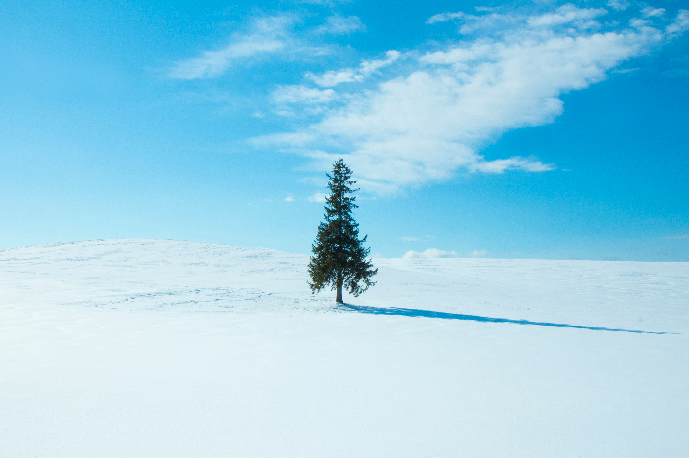

visiting Hokkaido
비에이
사실 홋카이도를 가는 이유는 여기 때문임
위치
나무

흰수염 폭포
교통수단
굉장히 넓고 겨울엔 눈이 많이 오기 때문에 자동차를 렌트하는것을 추천합니다.
본인 16살때라 민망하네요.....
에비동(새우튀김 덮밥) jmt
🍤🍤
준페이🍤🍤
느낀점
여름이랑 겨울이랑 느낌이 굉장히 다른 곳, 여름에도 방문해보고 싶음. 겨울엔 눈이 정말 많이와서 발목까지 발이 들어감. 운전을 할거라면 목숨걸고 해야할지도...